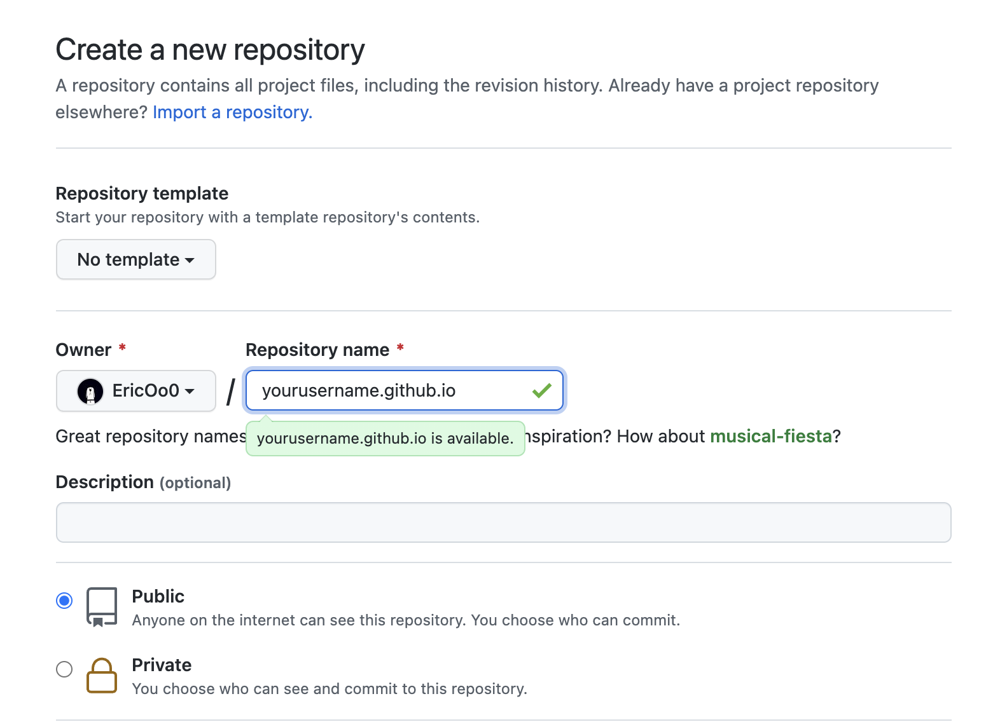
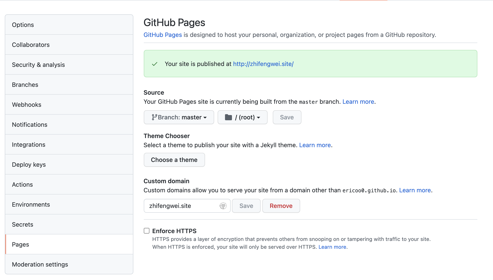
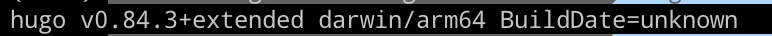
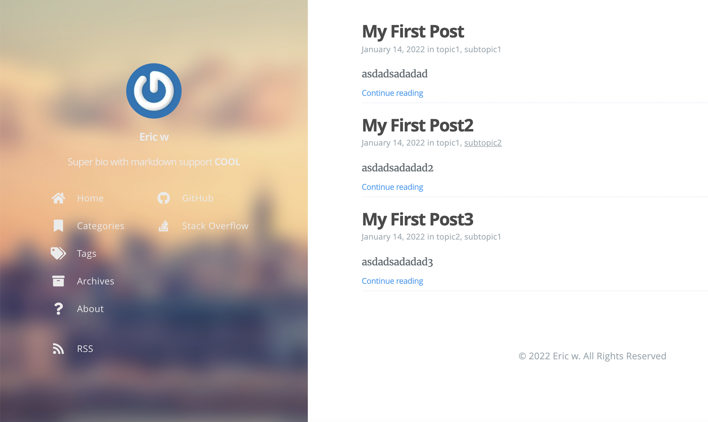

Hugo+gitpage搭建属于自己的个人博客
对于不熟悉前端技术的同学来说，可以通过静态博客生成器自动将我们写的markdown笔记转化成静态html页面，放到网站上，给我们省去了很多麻烦事。
常用的三个静态博客生成器：
而gitpage有静态页面托管的功能，省去了我们部署web服务器的精力和开销。
本文将介绍如何使用gitpage + Hugo来搭建属于自己的blog。
1、创建github仓库
创建一个github仓库，用于存放hugo生成的代码以及托管我们的博客。
仓库的名字为yourusername.github.io：

如果有自己的域名可以修改为自己的域名，这样就可以通过域名访问到你的博客：

2、本地安装HUGO
1、 安装HUGO
根据安装指南安装hugo工具：Install hugo
博主在macos下的安装方法：
brew install hugo
Hugo version
当出现hugo版本号则证明安装成功

Git 的安装方法此处不赘述了。
3、利用hugo建立自己的网站目录
- 进入想要存放网站的目录，如home目录下
cd /
hugo new site my-blog #my-blog是你的网站文件夹名字
- 然后去选择一个自己喜欢的模版：Tranquilpeak 会相对容易上手一点
Hugo Themes: https://themes.gohugo.io
- 将主题clone到本地
cd /my-blog # 进入网站目录 mkdir -p themes # 创建 “themes” 目录。 cd themes
git clone https://github.com/Track3/hermit.git hermit # 将 hermit 主题克隆到 hermit目录
4、配置网站
-
将下载好的模版中的配置文件( themes/hermit/exampleSite/config.toml )复制到网站根目录下(/my-blog)
-
在 Hugo 网站文件夹的根目录下/my-blog ，打开
config.toml文件 -
根据所选主题编辑config.toml,修改一些配置；一般将baseurl修改为你的网站域名(最好带上协议：http://example.com)，以及一些必要信息
5、新建一篇文章
此时你的网站框架已经大致建立好了，当你要新建文章时，利用hugo new可以生成一篇文章模版，放在 my-blog/content/post下
hugo new post/my-first-post.md # “my-first-post.md” 是新建文章的文件名。
写完文章后可以本地预览我们的博客了
hugo server -D 使用浏览器打开 http://localhost:1313 预览 如果你对预览效果满意，进入下一步。 如果不满意，编辑 config.toml 配置文件，再次预览

6、构建hugo网站
在网站根目录下执行hugo命令
hugo # 构建你的 Hugo 网站，默认将静态站点保存到 “public” 目录。
7、转化为git库
cd ~/my-blog/public # 生成的 HTML 文件保存在 “public” 目录中，“public” 文件夹会被转换为 Git 库。 git init # 初始化 Git 库。
关联到远方库
git remote add origin https://github.com/yourusername/yourusername.github.io.git
git status # 查看当前修改状态。 git add . # 添加所有修改过的文件。你也可以只添加某个文件。 git commit -m “Add a new post” # “Add a new post” 是 commit message.
git push -u origin master
此时到github上的setting查看你的gitpage是否生效，生效后即可通过gitpage访问你的博客了，博客页面由你选择的模版决定，也可以自己进行修改。对于不懂前端的人就可以只关注写博文啦。
8、域名
gitpage默认的域名时yourusername.github.io,你也可以去腾讯云或者阿里云之类的地方购买自己的域名，添加dns解析后替换掉默认的域名
9、日常操作
新建文章：hugo new post/文章名.md
删除文章：
删除两处文件
在目录 /post 、/public 下找到对应文件进行删除
其中 public 下文件不删除也不影响显示，只是该文件就会一直存在，另外该目录下即便文件（除.git)删错或者全部删除也是不影响的，应为 hugo 命令会全部重建
修改文章则直接在post下的文章修改即可
操作完成后使用hugo命令重构
git 上传到github更新博客
10、增加评论功能
一般hugo模版都支持disqus和gitalk来做评论系统，但国内disqus被墙效果可能不太好
-
disqus
在hugo搭建的静态页面添加hugos很简单，只需要在config.toml中修改 disqusShortname = “example-com” 即可
因此需要先去disqus官网注册你的网站信息。
- https://disqus.com/ 选择get started注册账户
- 选择 I want to install Disqus on my site
- 填写相关信息然后获得disqusShortname，就是你填写的website name，点(.)会被替换成(-)
- 修改config文件后即可使用
如果出现无法加载问题，可能说没有挂梯子或者你的baseurl设置有问题，一般要带上协议如http://baseurl
-
gitalk
- gitalk 首先在博客repo的设置里开启issue功能
- https://github.com/settings/developers 创建一个oath application
- Homepage URL和Authorization callback URL填写网站地址
- application 注册成功后
- 将Client ID，Client secrets，repo name，username等信息填到config.toml中，一般支持gitalk的模版都有相关选项
11、增加新的内容页
hugo也可自己定制内容页，想要自己新增内容页
-
content文件夹下新增内容页名字文件夹，如content/gallery
新建空白的_index.md文件
此时在本地调试就可以访问到 https://localhost:1313/gallery
-
在使用的主题的layout中增加section文件夹 blog/themes/tranquilpeak/layouts/section
在这里增加你的页面html文件 gallery.html
此时本地调试访问 https://localhost:1313/gallery就是你的html内容，可以利用主题带的partials等一系列文件进行定制化也可以自 己写html。
如果需要在菜单栏配置跳转的秃标，配置param参数，url就是要跳转到的url
[[menu.main]]
weight = 4
identifier = "gallery"
name = "Gallery"
pre = "<i class=\"sidebar-button-icon fas fa-lg fa-image\" aria-hidden=\"true\"></i>"
url = "/gallery"